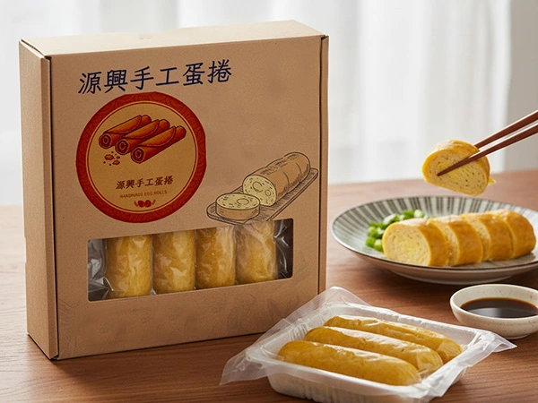
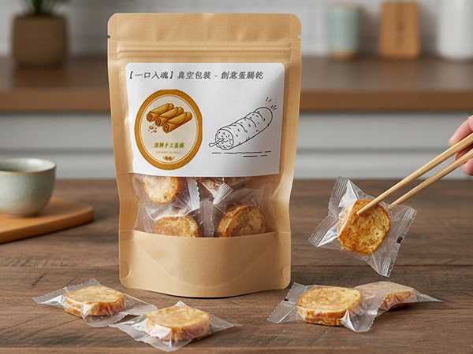
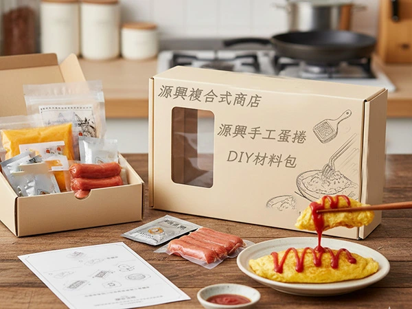

card_giftcard【黃金傳承】經典冷凍手工蛋包腸禮盒 🥚✨
產品介紹：
這款禮盒致敬了基隆最純粹的「蛋包腸」文化。我們堅持不添加人工色素，僅使用產地直送的新鮮土雞蛋，配上特製的高湯調味。每一條蛋包腸都由資深職人手工灌製，確保腸衣厚薄適中，能在烹煮時呈現出宛如「馬卡龍」般的可愛外型。
- 一、全程冷凍保存： 因無添加防腐劑，請務必存放於 -18度C 以下冷凍庫，避免反覆解凍影響蛋皮質地。
- 二、最佳解凍方式： 建議料理前一天放置於冰箱冷藏室自然解凍，可保持蛋腸最完美的 Q 彈口感。
- 三、加熱時間掌控： 加入火鍋或煮湯時，水開後放入煮約 3-5 分鐘 呈馬卡龍狀即可，過度烹煮會導致蛋香流失。
- 四、腸衣特性說明： 採用天然腸衣灌製，若加熱後有輕微收縮或彎曲屬自然現象，請安心食用。
- 五、過敏原資訊： 本產品含有雞蛋及其製品，不適合對其過敏體質者食用。

card_giftcard【一口脆響】低溫烘焙蛋包腸脆片 🥓🍳
產品介紹：
誰說蛋包腸只能熱熱吃？我們利用先進的「低溫真空慢炸技術」（VF技術），將新鮮蛋包腸的油脂抽出，保留其完整的纖維與營養。成品口感酥脆不油膩，每一口都能聽到清脆的聲音，是目前市場上極其少見的創新零食伴手禮。
- 一、避免陽光直射： 請存放於陰涼乾燥處，陽光曝曬會導致油脂氧化，產生油耗味。
- 二、開封後儘速食用： 脆片極易受潮，開封後若未吃完，請務必將夾鏈袋封緊，建議 3 天內 食用完畢。
- 三、復脆小撇步： 若因空氣接觸導致口感變軟，可放入氣炸鍋以 140度C 加熱 1-2 分鐘，即可恢復酥脆。
- 四、小心碎裂： 脆片質地較酥脆，存放或攜帶時請避免重壓，以免產品碎裂影響口感。
- 五、適量食用： 雖然採低溫烘焙，但香腸本身仍有鹽分，建議適量搭配飲品享用更解膩。

card_giftcard【創味家園】DIY 蛋包腸職人體驗組 🎁👩🍳
產品介紹：
送禮送心意，不如送份動手做的樂趣！這款DIY蛋包腸材料組，內含製作美味蛋包腸所需的所有關鍵食材：特製蛋粉、精選小熱狗，以及獨家調味
醬包。只需簡單步驟，就能在家輕鬆做出熱騰騰、香噴噴的蛋包腸。讓收到禮物的朋友或家人，享受親手烹飪的過程，創造屬於自己的美味回憶，是親子同樂或情侶約會的最佳選擇。
- 一、蛋粉調製比例： 攪拌蛋粉時，請務必按照說明書的水粉比例，水量過多會導致蛋皮過薄容易破裂。
- 二、鍋具預熱技巧： 使用內附迷你平底鍋時，建議先以小火預熱並均勻抹油，才能煎出完美不沾黏的金黃蛋皮。
- 三、香腸需完全熟透： 組件內的香腸需確保捲入蛋皮後，整體加熱至中心溫度達75度C 以上方可食用。
- 四、兒童操作指導： 內含加熱器具與火源使用，兒童操作時務必由家長全程陪同，注意高溫防燙。
- 五、工具清潔維護： 迷你平底鍋具不沾塗層，清洗時請使用柔軟海綿，嚴禁使用鋼刷，以延長使用壽命。
